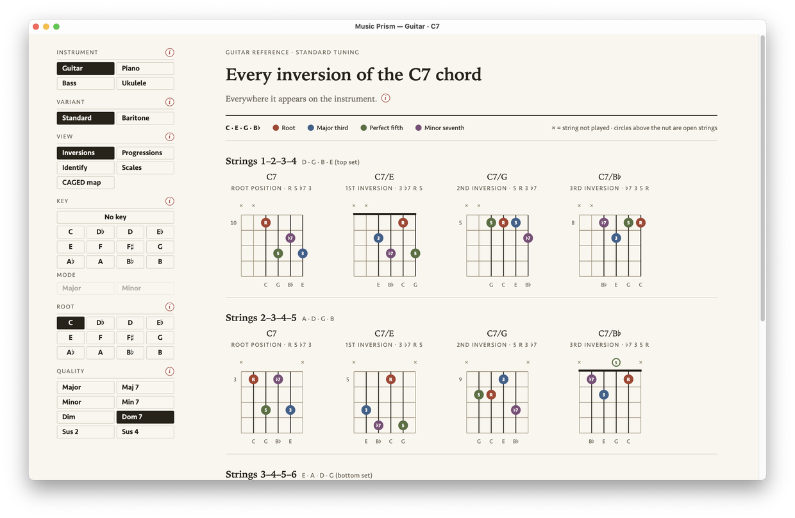
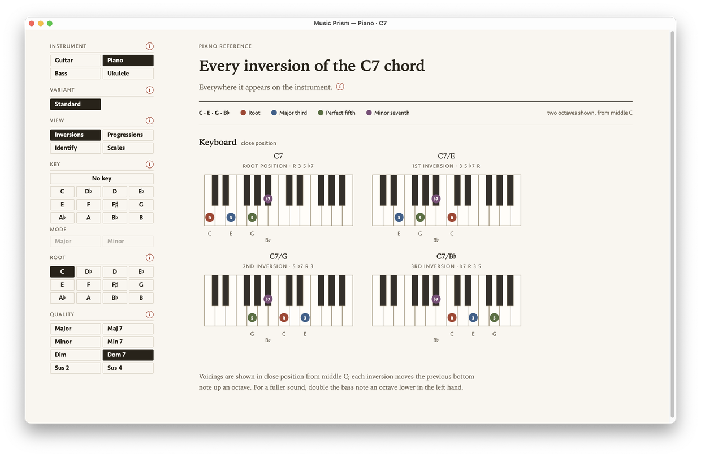

Inversions = Voicings
“Inversions” are the different ways one chord can be voiced — the same notes, stacked in another order, in another place. You can play a chord in a lot of spots on the fretboard or keyboard, and which one you reach for depends on where your hand is coming from and where it’s going next in the song.
The standard advice is to learn them all, up and down the neck, in every key. Music Prism gives you a way to work through that methodically, and a reference to come back to as you grow.
View
InversionsProgressions
IdentifyScales
CAGED map

